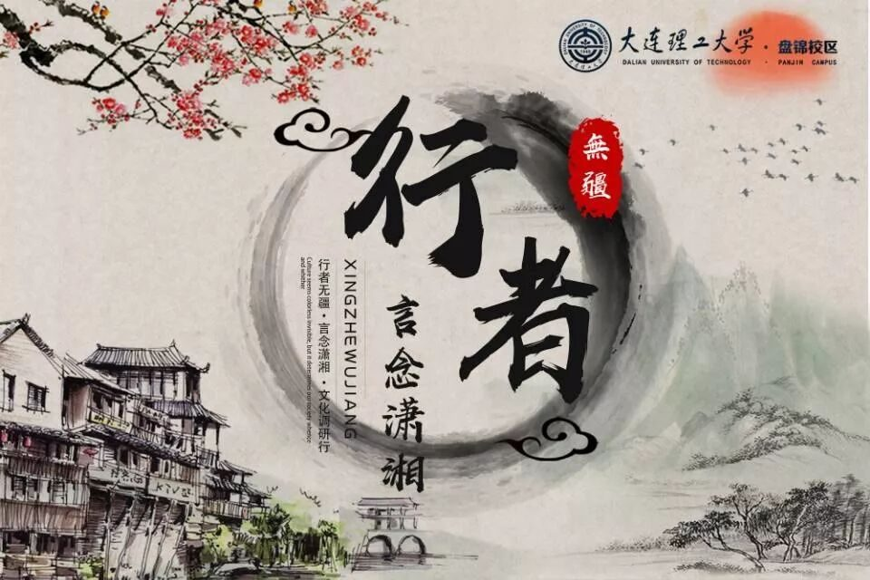
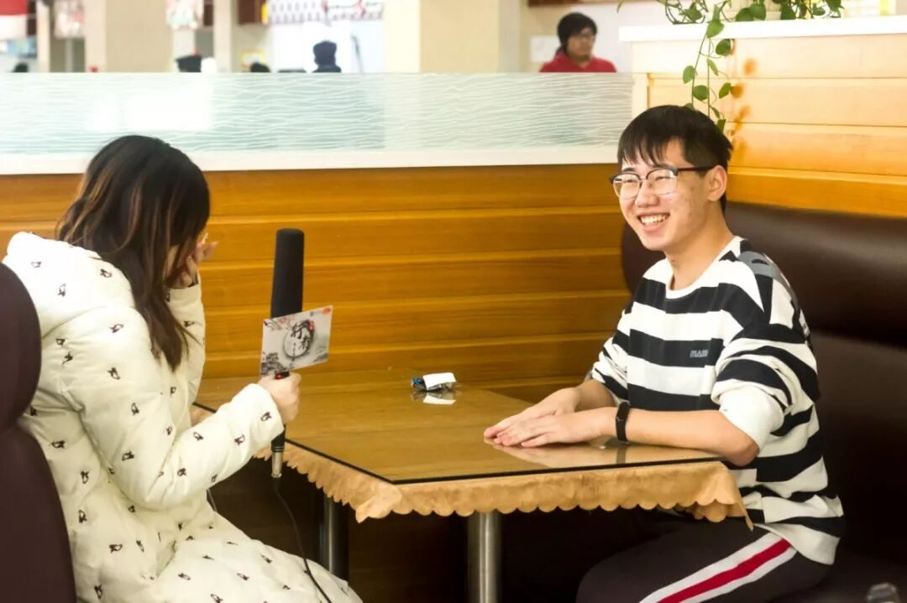
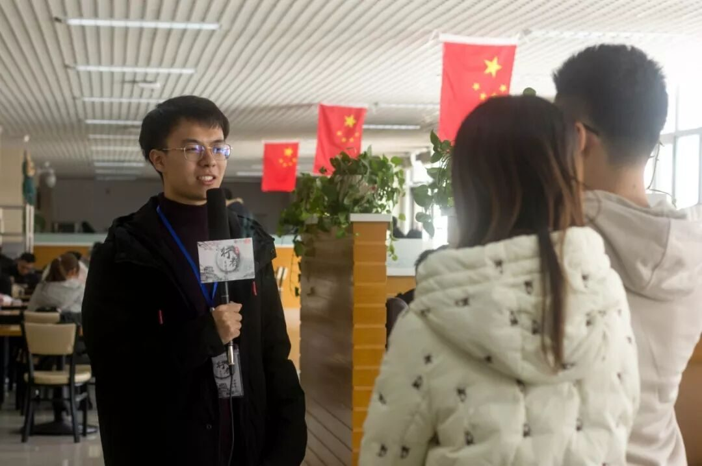
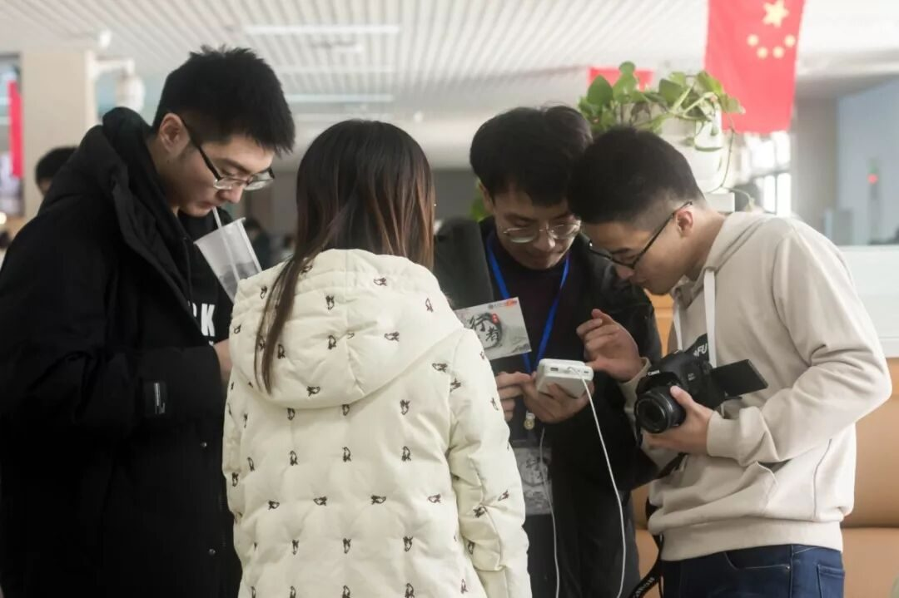
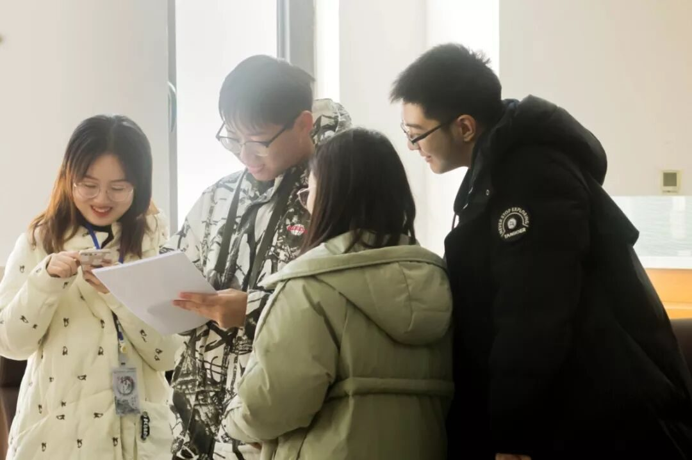

【行者无疆 言念潇湘】校园采访活动总结


校园采访及问卷调查活动总结
隆冬已至
旧雪尚未消融
寒梅解意
行者正在路上
我忐忑伸手，递出问卷邀你填写
你爽朗一笑，潇洒提笔耐心作答


为一窥同学们心中的湖湘文化，行者们精心制作了一份调查问卷。在十二月末，行者们分散于校园各处，诚邀来往的同学填写问卷。“哪些古迹属于岳麓书院”之类的客观题让同学们眉头蹙起，在大脑中飞快搜索着相关知识；


你怎样看待湖湘文化精神？
你认为地域文化与人文思想之间的关系是什么？
这样的主观题目则让行者们得以窥见同学们心中的千面潇湘。当问卷上的数据汇总、答案出炉之时，同学们心中的“湖湘文化”清晰展现于行者面前。
阳光透过窗户，撒下一地斑驳
你笑语朗朗谈议风生，笑容竟比阳光还耀眼
熙来攘往的美食广场里，行者er持着话筒，与受访同学展开了一段段心灵的碰撞。




他们由“潇湘”的起源提及今日湖湘文化的传承，自“楚虽三户，亡秦必楚”的荆楚遗风聊到“经世致用”的湖湘文化，从长沙的民俗艺术谈到“湖南人才半国中”的奇景，谈古论今之间思维的火花在碰撞，汪洋辟阖的交谈中一点点勾勒出湖湘文化曼妙的身姿。

“北阻大江，南薄五岭，西接黔蜀，群苗所萃”的三湘大地孕育了“淳朴重义、勇敢尚武、经世致用、自强不息”的湖湘文化。光阴倏忽而过，千古潇湘长身玉立在三湘之畔，莞尔而笑。
千般荒凉，以此为梦；万里蹀躞，以此为归。只有走在路上，才能摆脱局限，摆脱执着，让所有的选择、探寻、猜测、想象都生气勃勃。
城月迢迢，征鸿杳杳，冰天雪地的季节里，同学们的答案将伴随着行者们，奔赴三湘大地。
来源 | 行者无疆实践团
视频 | 陈辉
文字 | 苏亚男
排版 | 康艳虎
审核 | 段智然 康艳虎
行者无疆实践团
QQ：2758025831

随行者一起认识世界
长按二维码